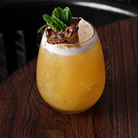
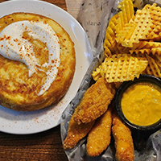

Menu del lunes
Ñoquis souffle de calabaza acompañados de una salsa a elección, acompañado de un exrimido de naranja con notas de eucalipto y menta.
Salsas: Fileto / Pesto / Crema / Rosa / Manteca de salvia.

Menu del martes
Tartaleta de vegetales asados. Contiene zucchini, berenjena, cebolla, pimiento rojo, tomate cherry, con cema de castañas en masa sablee de tomillo.
Acompañamientos: Mix de verdes o paras fritas cortadas sutilmente en rejilla.